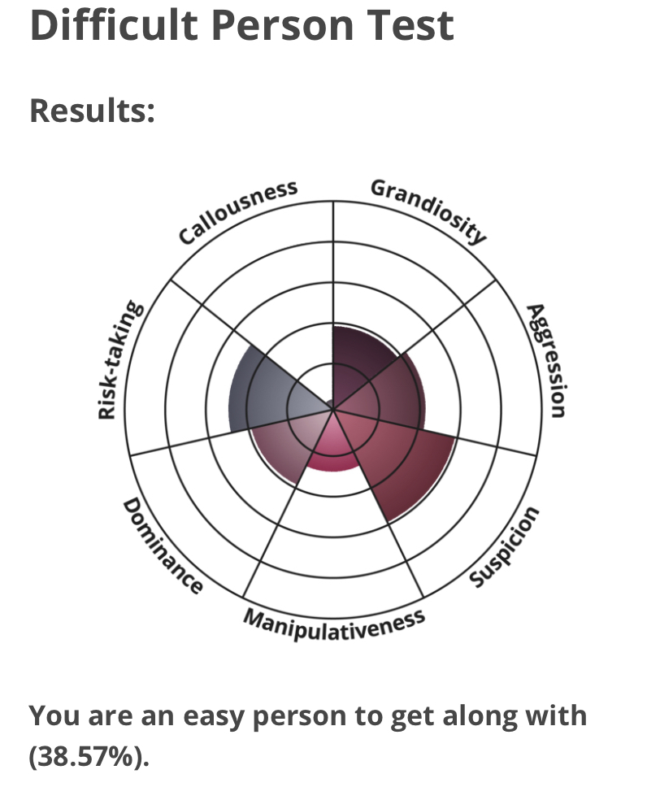

My Profile Profile
MBTI:
INFP-T (The Mediator)
Learning styles test:
Auditory: 40%
Visual: 25%
Tactile: 35%
Difficult Person Test
>What do the results of these tests mean for you?
To me, the results for the Myers-Briggs Type Indicator test and the difficult person test indicate that I am good to be around, and that I can handle most, if not all, situations in a calm and helpful manner. The learning styles test shows me that I learn the best when I receive information auditorily, and that I learn the worst with purely visual information.
How do you think these results may influence your behaviour in a team?
The Myers-Briggs Type Indicator test results suggest that I will thrive in a team where the structure is more flat, as in where everyone is more or less on the same level of importance, so that everyone’s opinions and thoughts can be taken into account. My learning styles test indicates that I will perform better in a team where we have in person discussions. My difficult person test results indicate that I would be mildly suspicious of my fellow teammates.
How should you take this into account when forming a team?
When forming a team, the reporting structure should be fairly flat, as to encourage free-flowing discussions. I would also benefit from people who talk directly, instead of beating around the bush. Based on my learning styles test, I would benefit from daily/weekly roundtable meetings where we talk, as opposed to email chains or slideshows where we primarily have to read the information presented.